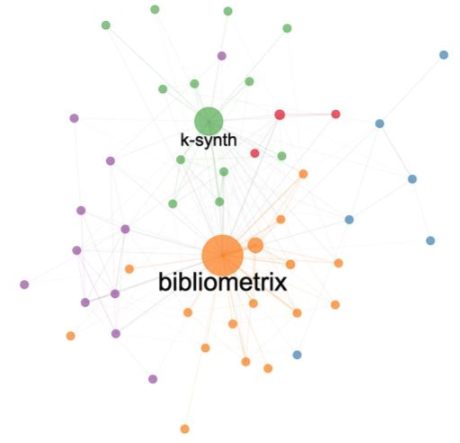

When I’m not blogging about demography, I blog here about economics, finance, data science, computing or any other interesting topic for the community. It’s a way to keep my ideas organized and gathered in one place rather than scattered across countless directories and folders on my computer. This makes them easily accessible—not just to me, but to anyone interested—though please remember that these posts reflect only my opinions, methods…
2026

No matching items
2023

No matching items
2022
Scientific Maps Analysis with the `R` package `bibliometrix`
bibliometry
mapping
bibliometric analysis
Example of scientific maps for bibliometric analysis


No matching items
2021
Forecasting with XGBoost: An implementation in R
XGBoost
data analysis
forecasting
machine learning
Application in `R` of the XGBoost machine learning algorithm for predictive modelling
No matching items